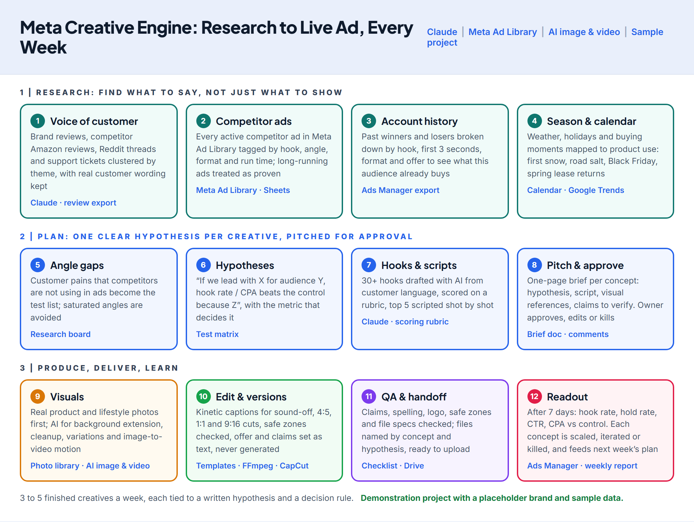
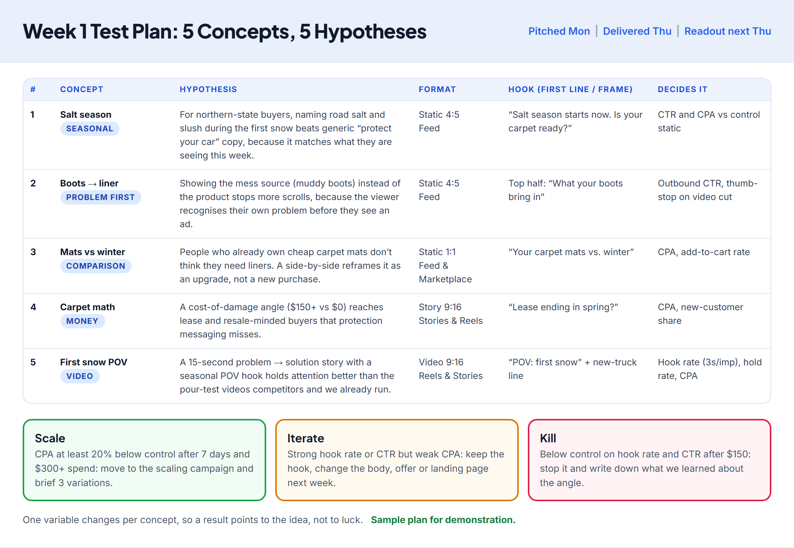
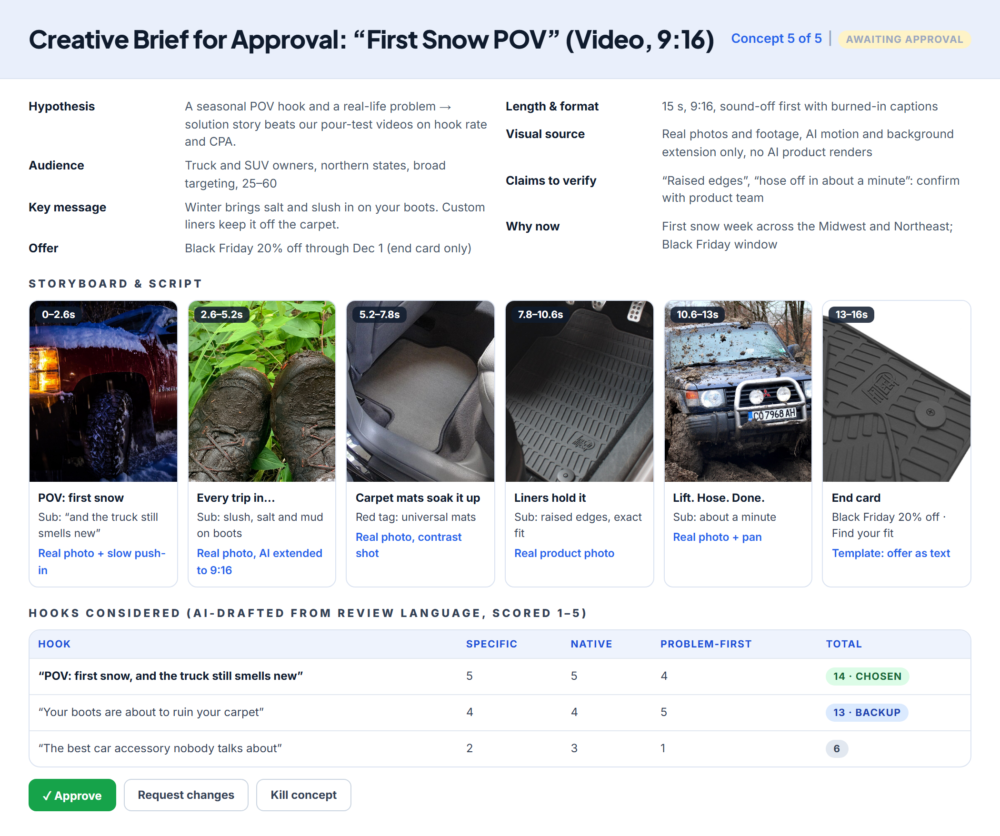
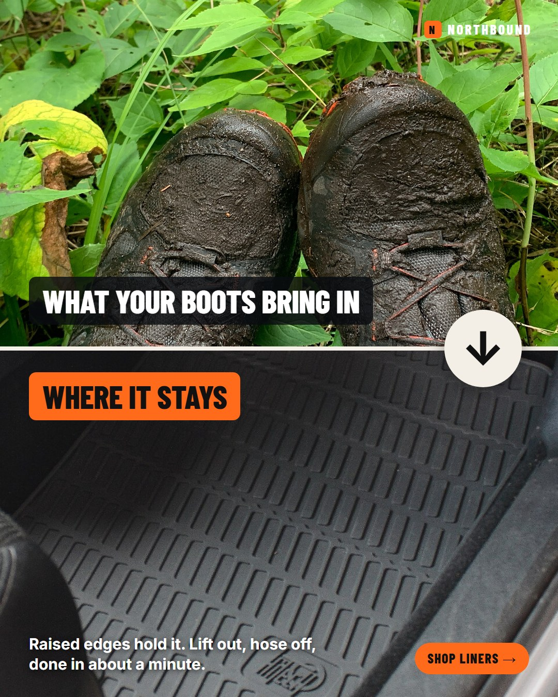
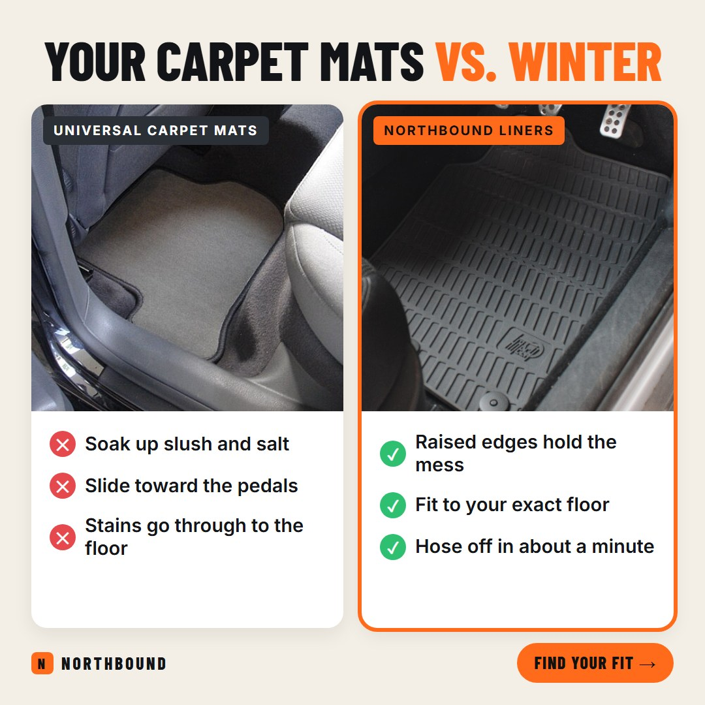
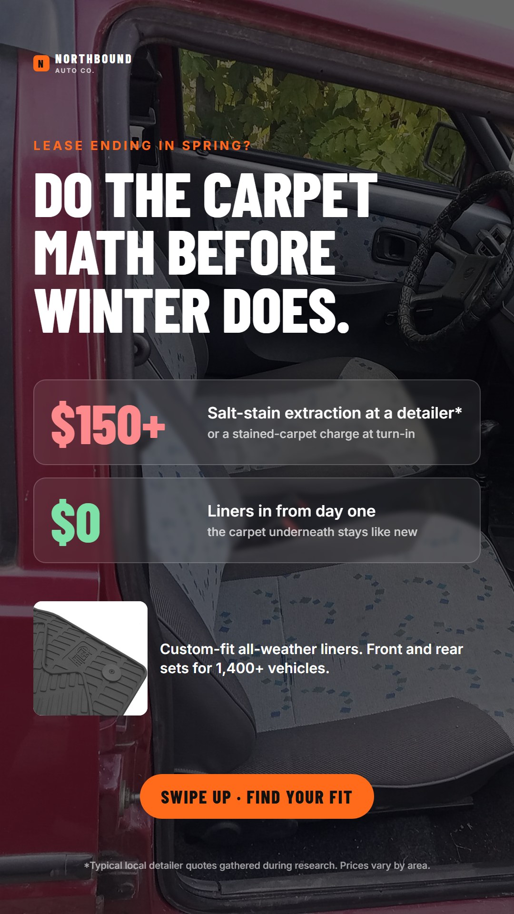
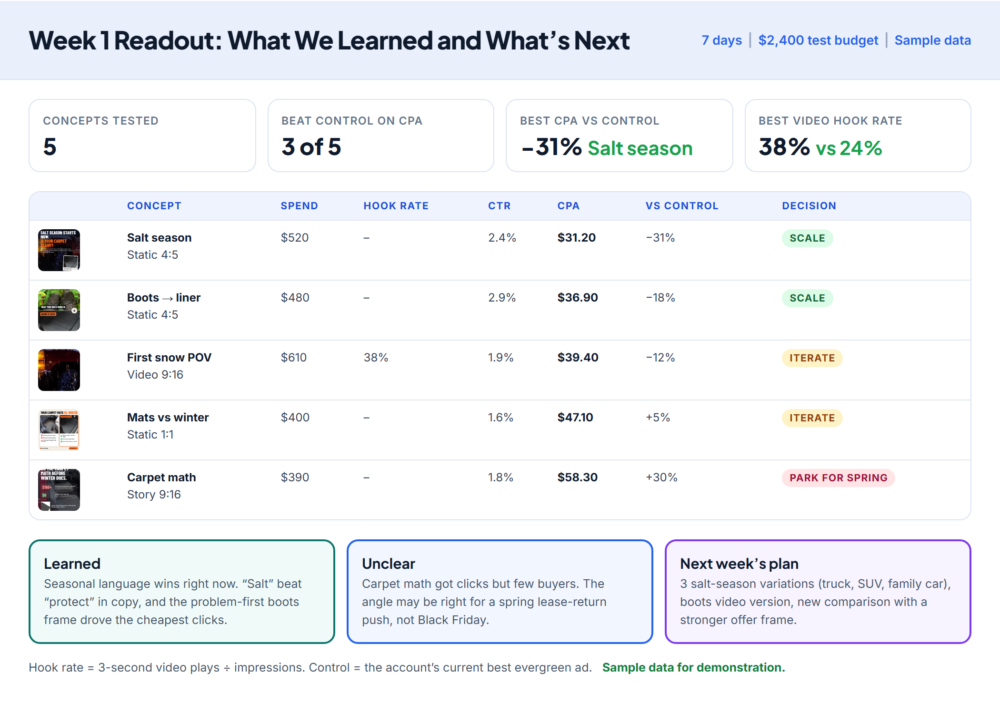
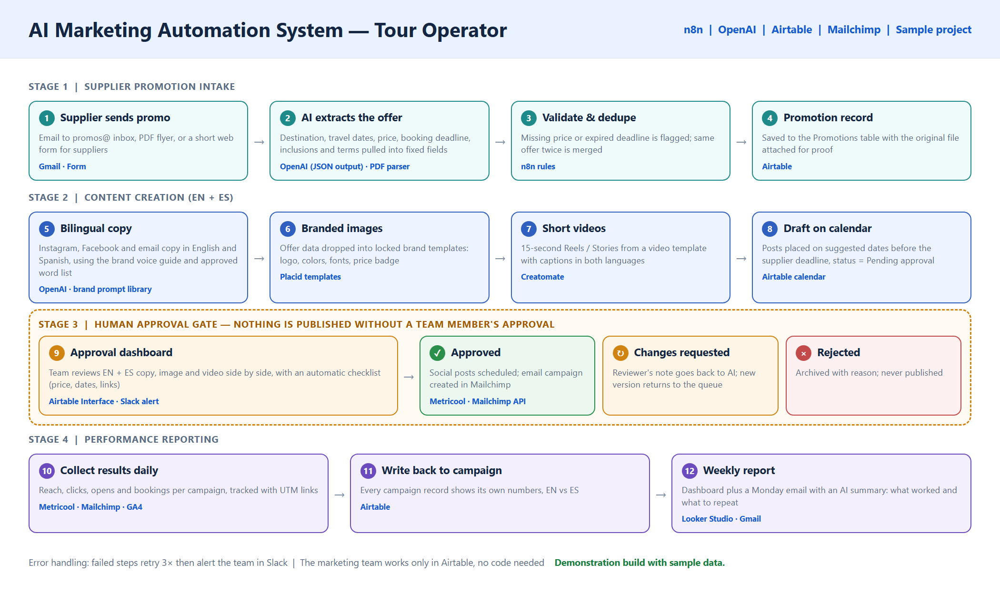
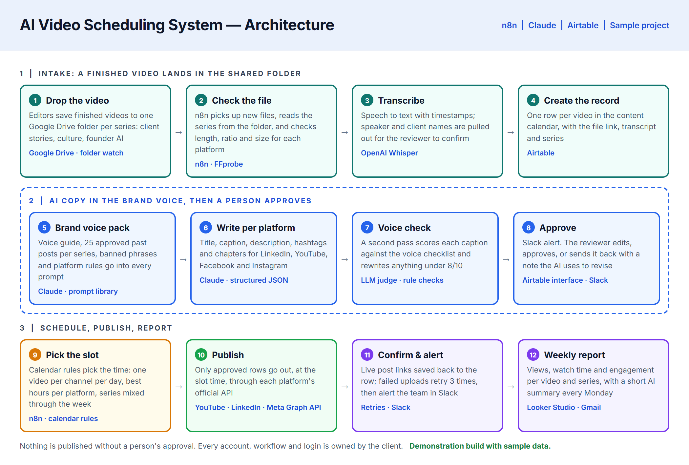

A brand that knows AI ads work, and has run out of ideas to test
An automotive accessories brand selling on Meta. Some of its best ads, each with 300+ orders, were AI image and video creatives. The owner had made every creative for three years, no longer had time to make enough of them, and had hit a creative block on what to test next. The ask: a person who researches, plans, scripts, pitches for approval and then produces the finished creative, 3 to 5 a week, with strategy behind every one.
My answer is a repeatable weekly system. Research decides what to say. A hypothesis decides what each ad is testing. AI speeds up the drafting and the production, but real photos and real customer words keep it from looking like AI filler.

The weekly system: research, plan and pitch, then produce, deliver and learn.Find what customers say and what competitors don’t
For the hero product, all-weather floor liners, I pulled 1,240 reviews of the brand and three competitors, plus 86 active competitor ads from Meta Ad Library. Claude clustered the reviews into themes and kept the customers’ own words. I tagged every competitor ad by hook and angle, and broke down the account’s past winners.
 The research board. Orange bars are the gaps: what customers care about that almost no competitor ad says.
The research board. Orange bars are the gaps: what customers care about that almost no competitor ad says.
- The biggest gap: snow, slush and road salt come up in 34% of reviews but only 3% of competitor ads, and it is late November
- The saturated angle: 41% of competitor ads are the same water-pour demo, so another one would blend in
- What already works here: the account’s winners show the problem in the first 1.5 seconds, look real, and put the price late
- Every AI summary is checked: themes were verified against 100 reviews read by hand before anything was written
One idea per ad, and the number that decides it
Each concept tests one angle and changes one main variable, so the result tells us something about the idea and not just about luck. The scale, iterate and kill rules are agreed before anything is spent.

Week 1 test plan: five concepts, five hypotheses, decision rules set up front.A one-page brief before anything is produced
The owner sees every concept before production: the hypothesis, audience, script shot by shot, where each visual comes from, and which product claims need to be confirmed. Hooks are drafted with AI from real review language, then scored on a simple rubric so the choice is explained, not a gut call. The owner can approve, ask for changes or kill the idea.

The brief for the video concept, with storyboard, hook scores and the approval step.Four static ads, ready to upload
Built from real photographs, not AI product renders, because the account’s winners look real. Prices, offers and claims are set as text in templates, so they are never misspelled or invented by an image model. Click any ad to open it at full size.




15-second vertical video: “First snow POV”
Cut from real photos with slow push-ins and pans, kinetic captions for sound-off viewing, and an end card with the offer. The hook lands in the first second and the product does not appear until the problem is clear, the same pattern as the account’s past winners.
| Time | On screen | Job of the shot |
|---|---|---|
| 0–2.6s | POV: first snow | Seasonal hook, stop the scroll |
| 2.6–5.2s | Every trip in… (muddy boots) | Show the real problem |
| 5.2–7.8s | Carpet mats soak it up | Why what they have now fails |
| 7.8–10.6s | Liners hold it | The product as the answer |
| 10.6–13s | Lift. Hose. Done. | Easy to live with |
| 13–16s | End card: Black Friday 20% off | Offer and call to action |
In production the same timeline takes AI image-to-video clips or creator footage in place of the still photos. The structure, captions and end card stay template-based so every version can be made in minutes.
The readout that feeds next week
After seven days, each concept is judged against the account’s current best ad using the rules agreed in the plan. Winners are scaled and get new variations. Ideas with a strong hook but weak sales are iterated. The rest are stopped, and what we learned about the angle goes into the next research round.

Week 1 readout with the decision for each concept and the plan for week 2 (sample data).How AI is used, and where it isn’t
- Research: Claude clusters hundreds of reviews into themes and pulls exact customer phrases, which I spot-check by hand
- Ideas: AI drafts 30+ hooks per week from customer language; a scoring rubric and my judgement pick the 5 worth making
- Scripts: shot-by-shot scripts drafted with AI, then edited for the brand’s tone and the first-3-seconds rule
- Visuals: real product and lifestyle photos first; AI for background extension to 9:16, cleanup, variations and image-to-video motion
- Not AI: prices, offers, product claims and logos are set as text in templates, and every claim is confirmed before launch
What the owner gets each week
- A research note with the angle gaps found that week
- A test plan with one hypothesis and one decision metric per concept
- A one-page brief per concept to approve, change or kill
- 3 to 5 finished creatives in every placement size, named by concept, ready for Ads Manager
- A short readout with scale, iterate or kill calls and next week’s plan
Demonstration project: the brand is a placeholder, and the research numbers and results are sample data. Photos are real and come from Wikimedia Commons (credits below).
Photos from Wikimedia Commons: Red Truck In The Snow (245604409) by Daniel Ross (CC0); Muddy Boots - Isle Royale National Park Backpacking Trip (53075677106) by Tony Webster (CC BY 2.0); Fitted-rubber-car-mats-image by Keystones (CC BY-SA 3.0); Tailored-rubber-mats-moulded-car-mats by Keystones (CC BY-SA 3.0); Car mats fitted by Keystones (CC BY-SA 3.0); Mitsubishi Pajero in off-roading by Biso (CC BY 3.0); ZAZ-1103 Slavuta front seats and dashboard interior view by Natalka Ukraine (CC BY 4.0). Text, layout and edits added. The brand “Northbound Auto Co.” is a placeholder.
.jpeg){kind=link}
.jpg){kind=link}


Other projects

One real supplier promotion turned into bilingual posts, carousels, a video and an email, with approval.

Supplier promotions become bilingual campaigns with branded visuals, human approval and scheduling.

AI writes captions in the brand voice, a person approves them, and posts are scheduled to four channels.